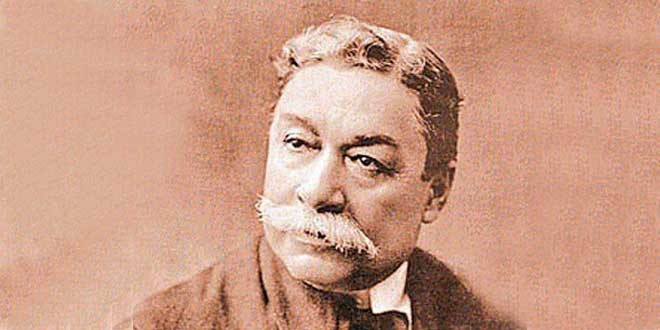

Federico Villareal
Matemático peruano que logró superar el binomio de Newton

Federico Villareal, destacado matemático que propuso una nueva fórmula para elevar un polinomio a una potencia cualquiera.
Línea de tiempo de la vida de Federico Villareal:
- 1850 - Nació en Túcume, Lambayeque, Perú
- 1864 - Se vio obligado a trabajar como cajero en la Negociación Zaracóndegui.
- 1873 - Gracias a su vocación por las ciencias exactas, logra superar el Binomio de Newton.
- 1876 - Se gradua como preceptor de segunda enseñanza.
- 1877 - Viaja a Lima e ingresa a la Facultad de Ciencias de la Universidad Nacional Mayor de San Marcos.
- 1879 - Obtiene el grado de bachiller con la tesis "Fórmulas y métodos qu deben complementarse en matemática pura".
- 1879 - En el contexto de la Guerra del Pacífico se alista en las filas de los defensores de la patria. Pelea en la Batalla del Moroo de Chorrillos y cae herido de cuidado en los campos de San Juan y Miraflores.
- 1880 - Obtiene la licenciatura con su la tesis "El efecto de refracción sobre el disco de los astros".
- 1881 - Obtiene y se convierte en el primer doctor en matemática por las tesis "Clasificación de las curvas de tercer grado".
- 1923 - Murió en Barranco-Lima, rindiéndosele honores póstumos correspondientes a la categoría de ministro de Estado.
"Su figura dio brillo propio a la ciencia peruana a fines del siglo XIX y principios del XX"-- Historiador Jorge Basadre Grohmann
Si tiene tiempo, puede leer más sobre este destacado matemático en: Entrada de Wikipedia.